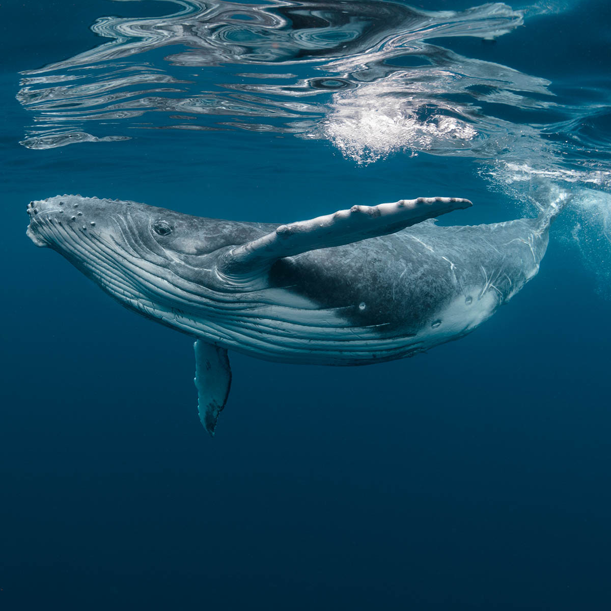

Whale in the ocean!
What is the blue whale?
Blue whales are the largest animals ever known to have lived on Earth.
These magnificent marine mammals rule the oceans at up to 100 feet long and upwards of 200 tons.
Their tongues alone can weigh as much as an elephant. Their hearts, as much as an automobile.
Diet of krill
Blue whales reach these mind-boggling dimensions on a diet composed nearly exclusively of tiny shrimplike animals called krill.
During certain times of the year, a single adult blue whale consumes about 4 tons of krill a day.
Blue whales are baleen whales, which means they have fringed plates of fingernail-like material, called baleen, attached to their upper jaws.
The giant animals feed by first gulping an enormous mouthful of water, expanding the pleated skin on their throat and belly to take it in.
Citeste mai mult despre balene!
